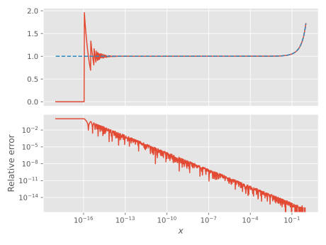

φₖ functions
Definition
These are defined recursively through
\[\begin{equation} \label{eqn:phi-k-recursive} \varphi_0(z) \defd \ce^z, \quad \varphi_1(z) \defd \frac{\ce^z-1}{z}, \quad \varphi_{k+1}(z) \defd \frac{\varphi_k(z)-\varphi_k(0)}{z}, \quad \varphi_k(0)=\frac{1}{k!}. \end{equation}\]
An alternate definition is
\[\begin{equation} h^k \varphi_k(hz) = \int_0^h \diff{s} \ce^{(h-s)z} \frac{s^{k-1}}{(k-1)!}. \end{equation}\]
Accuracy
Accuracy for $k=1$
\[\begin{equation} \label{eqn:phi-1-naive} \varphi_1(z) \equiv \frac{\ce^z-1}{z} \end{equation}\]
This is a common example of catastrophic cancellation; for small $\abs{z}$, $\ce^z - 1\approx 0$, and we thus divide a small number by a small number. By employing a trick shown by e.g.
Higham, N. (2002). Accuracy and stability of numerical
algorithms. Philadelphia: Society for Industrial and Applied
Mathematics.we can substantially improve accuracy:
\[\begin{equation} \label{eqn:phi-1-accurate} \varphi_1(z) = \begin{cases} 1, & \abs{z} < \varepsilon,\\ \frac{\ce^z-1}{\log\ce^z}, & \varepsilon < \abs{z} < 1, \\ \frac{\ce^z-1}{z}, & \textrm{else}. \end{cases} \end{equation}\]

The solid line corresponds to the naïve implementation $\eqref{eqn:phi-1-naive}$, whereas the dashed line corresponds to the accurate implementation $\eqref{eqn:phi-1-accurate}$.
Accuracy for $k > 1$
For a Taylor expansion of a function $f(x)$, we have
\[\begin{equation} f(x-a) = \underbrace{\sum_{i=0}^n \frac{f^{(i)}(a)}{i!} (x-a)^i}_{\defd T_n(x)} + \underbrace{\frac{f^{(n+1)}(\xi)}{(n+1)!}(x-a)^{n+1}}_{\defd R_n(x)}, \quad \xi \in [a,x] \end{equation}\]
We now Taylor expand $\ce^{(h-s)z}$ about $z=0$:
\[\begin{equation} \ce^{(h-s)z} = \sum_{i=0}^n \frac{z^i(h-s)^i}{i!} + \frac{\ce^{(h-s)\zeta}\zeta^{n+1}(h-s)^{n+1}}{(n+1)!}, \quad \abs{\zeta} \leq z. \end{equation}\]
With this, we now calculate the definite integral appearing in the definition of $\varphi_k$:
\[\begin{equation} \begin{aligned} \int_0^h\diff{s} \ce^{(h-s)z} s^{k-1} &= \int_0^h\diff{s} \sum_{i=0}^n \frac{z^i(h-s)^is^{k-1}}{i!} + \int_0^h\diff{s} \frac{\ce^{(h-s)\zeta}\zeta^{n+1}(h-s)^{n+1}s^{k-1}}{(n+1)!} \\ &= \sum_{i=0}^n \frac{z^i}{i!} \int_0^h\diff{s} (h-s)^is^{k-1} + \int_0^h\diff{s} \frac{\ce^{(h-s)\zeta}\zeta^{n+1}(h-s)^{n+1}s^{k-1}}{(n+1)!}. \end{aligned} \end{equation}\]
For the case we are interested in, $h=1$ and the first integral is equivalent to Euler's beta function:
\[\begin{equation} \int_0^1\diff{s} s^{k-1}(1-s)^i \equiv \Beta(k,i+1) \equiv \frac{\Gamma(k)\Gamma(i+1)}{\Gamma(k+i+1)}, \end{equation}\]
which, for integer $k,i$ has the following value
\[\begin{equation} \Beta(k,i+1) = \frac{(k-1)!i!}{(k+i)!}. \end{equation}\]
Inserting this into the integral (having set $h=1$), we find
\[\begin{equation} \label{eqn:phi-k-expansion} \varphi_k(z) = \sum_{i=0}^n \frac{z^{i}}{(k+i)!} +\int_0^1\diff{s} R_n(s,\zeta), \end{equation}\]
where we have made explicit the dependence of the Lagrange remainder $R_n(s,\zeta)$ on $s$.
Some numerical testing seems to indicate it is enough to set $n=k$ in the Taylor expansion $\eqref{eqn:phi-k-expansion}$ to get accurate evaluation of $\phi_k(x)$ for small $\abs{x}$, $x\in\mathbb{R}$. For general $z$, the amount of required terms seems higher, so $n$ is currently set to $10k$.

The plot includes $\phi_k(z)$ for $k\in\{0..100\}$. To illustrate the rounding errors that would occur if one were to use the recursive definition $\eqref{eqn:phi-k-recursive}$ directly , we plot $\varphi_k(x)$, but for $k\in\{0..4\}$ only:
Reference
MatrixPolynomials.φ₁ — Functionφ₁(z)Special case of φ for k=1, taking care to avoid numerical rounding errors for small $|z|$.
MatrixPolynomials.φ — Functionφ(k, z)Compute the entire function $\varphi_k(z)$, $z\in\mathbb{C}$, which is recursively defined as [Eq. (2.11) of Hochbruck2010]
\[\varphi_{k+1}(z) \equiv \frac{\varphi_k(z)-\varphi_k(0)}{z},\]
with the base cases
\[\varphi_{0}(z) = \exp(z), \quad \varphi_{1}(z) = \frac{\exp(z)-1}{z},\]
and the special case
\[\varphi_k(0) = \frac{1}{k!}.\]
This function, as the base case φ₁, is implemented to avoid rounding errors for small $|z|$.
φ(k)Return a function corresponding to φₖ.
Examples
julia> φ(0)
exp (generic function with 14 methods)
julia> φ(1)
φ₁ (generic function with 1 method)
julia> φ(2)
φ₂ (generic function with 1 method)
julia> φ(15)
φ₁₅ (generic function with 1 method)
julia> φ(15)(5.0 + im)
1.0931836313419128e-12 + 9.301475570434819e-14im